Lab 5: How Wrong Is Lumped Capacitance?
What we did
After doing an initial analysis to find the Biot number near boiling water (neither of us drink coffee), we found that it is indeed not lower than 0.1, nor is it even close to that number. As such, we wanted to numerically determine just how bad assuming a lumped capacitance model would be.
To achieve this I borrowed this very nice mug from my roommate Boston (yes, that is his legal first name, no he is not from the city). It was then prepped with two thermistors, one taped to the top brim of the mug and the other taped to the bottom of it. These were reused from the last lab so they were already pre-soldered to the wires which were connected to a breadboard with my Raspberry Pi Pico W.
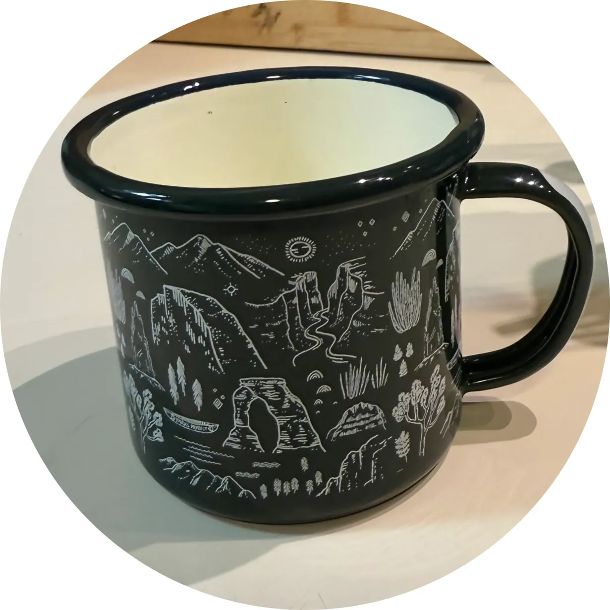
The resulting setup looked like this:
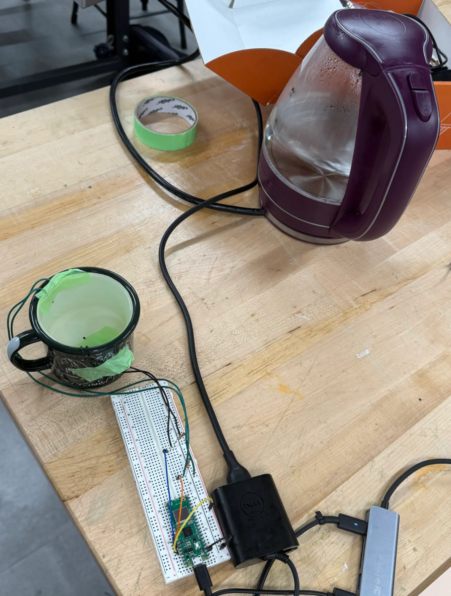
The above kettle was used to heat the water to boiling , and for the first experiment, let sit to cool without any interference.
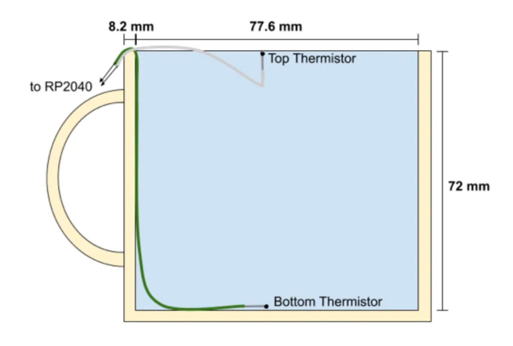
Here is a diagram of Boston’s Beautiful Boiling Beverage Bearer. The cup was filled all the way to brim, which was likely not our wisest choice from a safety perspective, but no participants were injured in the recording of this data.
Analytical Solution:
Starting with the governing differential equation for Lumped Capacitance:
Since
Where by boundary conditions
Given information about water just below boiling temperature:
All above measurements were pulled from our textbook, all those below were measured using calipers
- per our measurements of the mug using electronic calipers
As a note, the wall of the mug were assumed to be adiabatic.
Since it’s very much not less than 0.1, so the lumped capacitance is not an accurate model for determining the heat transfer from the water to the air as it cools.
Ignoring that for the time being:
Given that in Nolop and right after we finished boiling it, then
COMSOL
For this lab we wanted to measure how the heat from boiling water escapes from a mug. For this simulation we used Tom’s mug of 72 mm in depth and 77.6 mm in diameter, this was modeled using a cylinder geometry in COMSOL. Based on the initial starting data from the thermistor at the bottom of the mug we get an ambient temperature of 295.57 K with a heat transfer coefficient of 100 W/(m^2*K). After waiting a few seconds we add the boiling water and got an initial temperature of 376[K] for experiment 1. For experiment 2, shown in Figure 2 we got an initial temperature of 350[K] when adding the boiling water and the heat transfer coefficient was changed to about 200 W/(m^2*K) to the water being stirred. Since the heat transfer coefficient was higher for the second experiment the heat loss over time is much steeper than experiment 1.
Figure 1. (Experiment 1 Change Over Time)
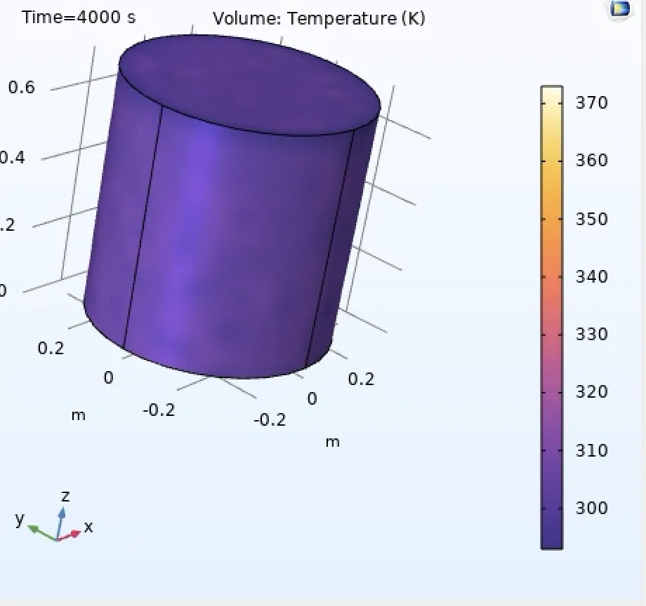
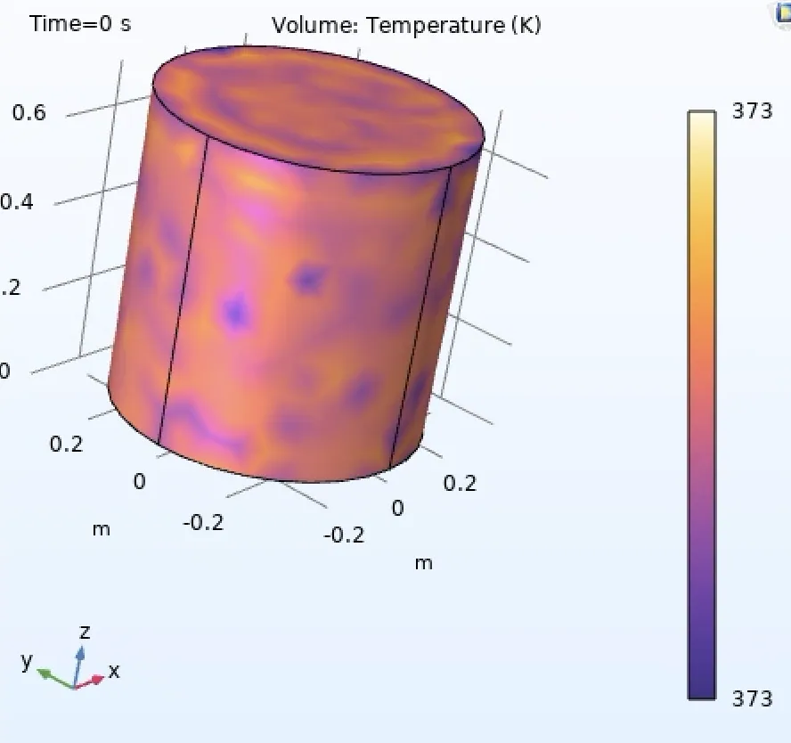
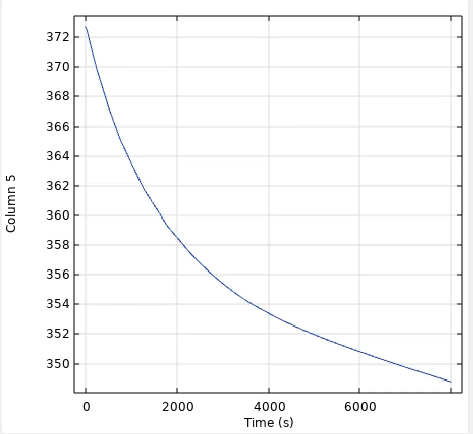
Figure 2. (Experiment 2 Stirring the Water 5 minute duration)
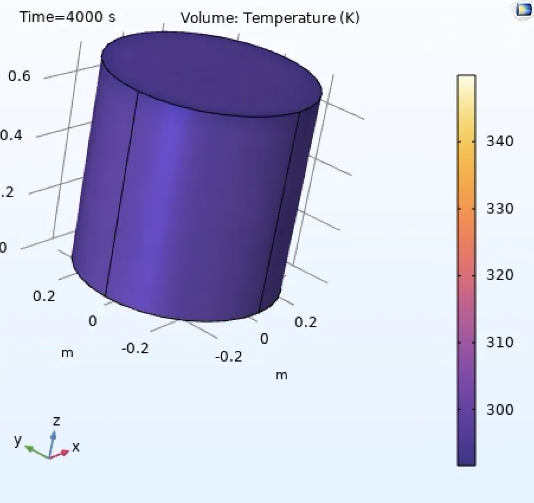
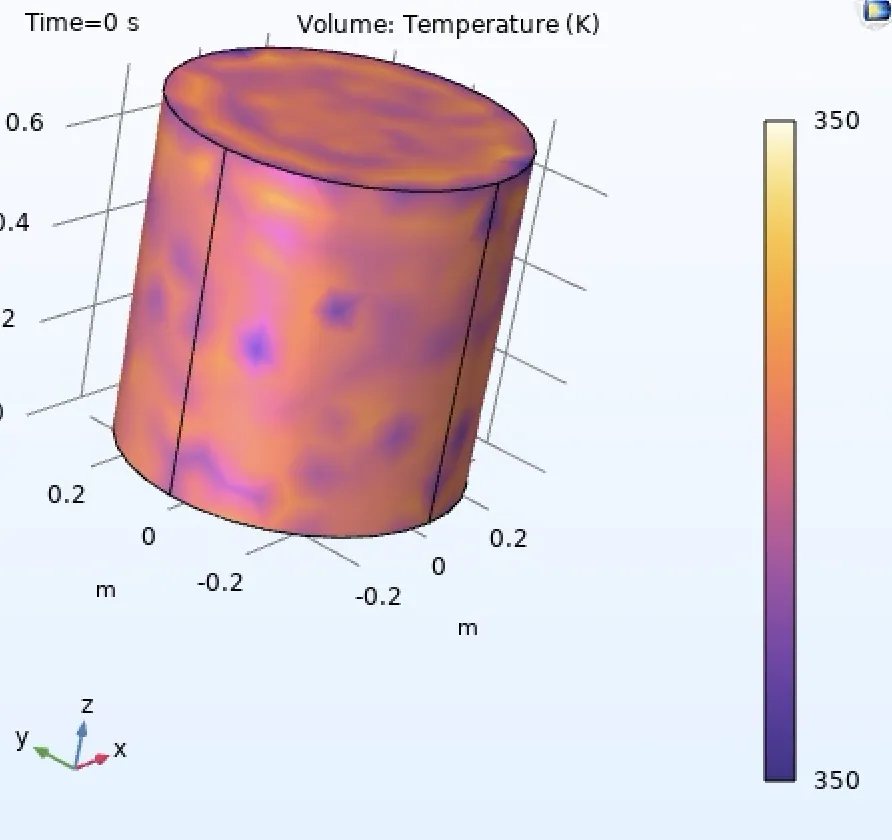
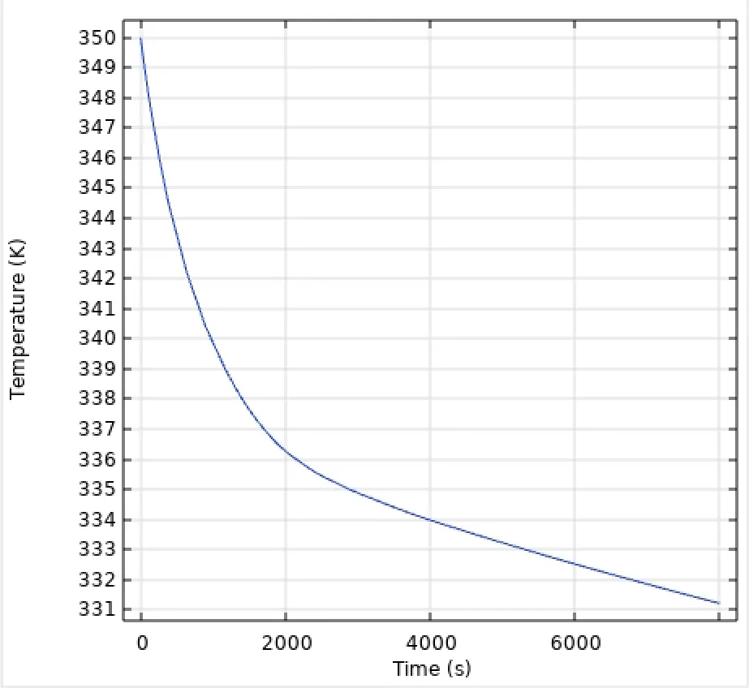
Experimental Data
Experiment 1 (Heat Loss over time)
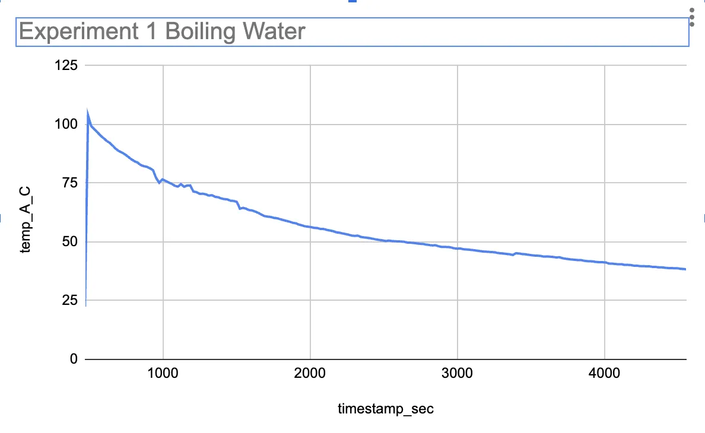
Experiment 2 (Heat Loss Over Time Stirring Data)
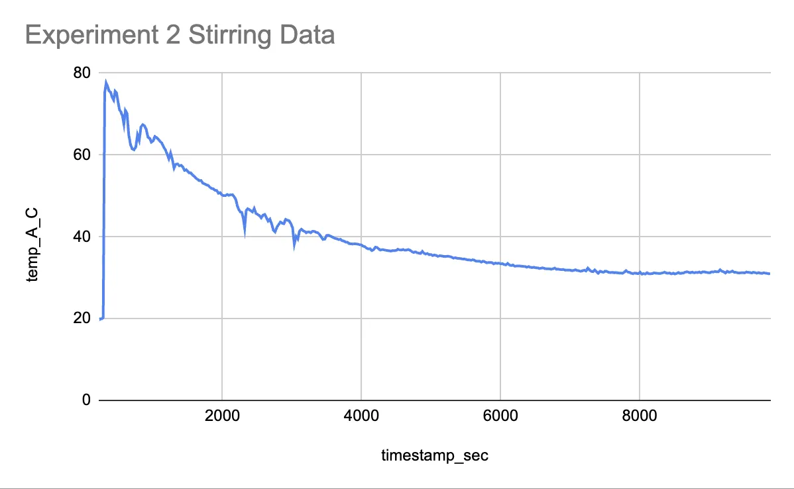
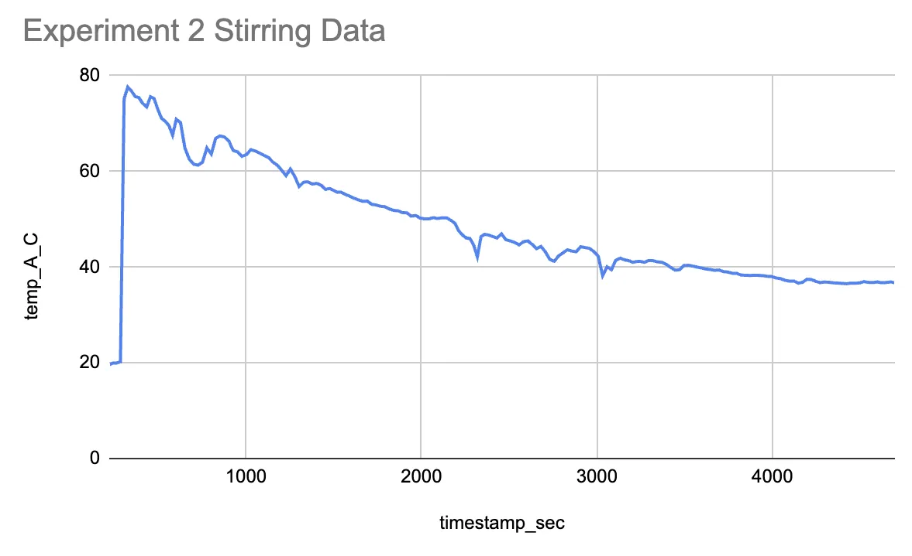
Reflections:
- What we learned
- I learn how important the heat transfer coefficient and how it changes based on ambient forces (air conditioning or stirring the water) . Something interesting was I am not to sure what the spikes are for experiment #2.
- What we were most proud of
- Finally getting the exponential curves from the COMSOL data
- Most spectacular failure
- I originally was completing the COMSOL incorrectly and was getting a heat loss of 373 K to 364 K for two hours. I don’t think that was accurate change for heat loss in boiling water so later adding to what was tough was figuring out how to properly model our experimental data.
Originally written in Notion.